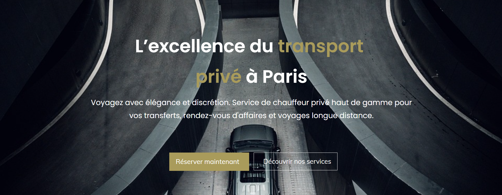
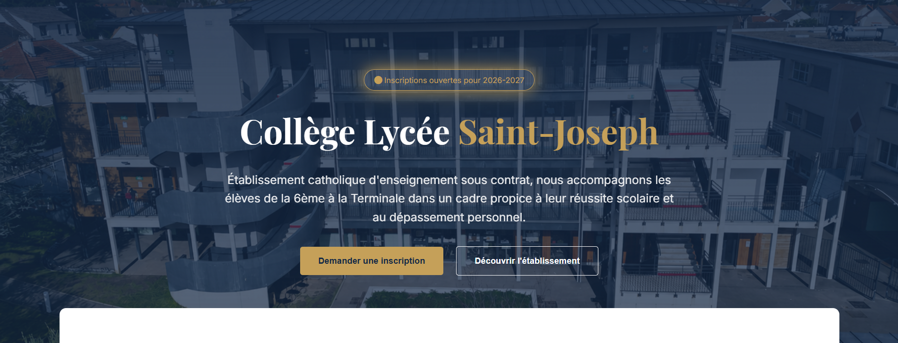

Un site qui freine la confiance
- Image datée ou peu professionnelle
- Message difficile à comprendre
- Navigation peu intuitive
- Peu de demandes de contact
Yizio conçoit des expériences web sur mesure qui renforcent votre image, rassurent vos prospects et transforment davantage de visites en demandes de contact.

Une identité conçue spécifiquement pour votre activité.
Un seul interlocuteur pour concevoir et développer votre site.
Une expérience fluide sur ordinateur, tablette et téléphone.
Chaque choix de design, de contenu et d’interaction doit servir un objectif : rassurer, expliquer et faire passer votre visiteur à l’action.
Du premier concept à la mise en ligne, Yizio prend en charge l’ensemble de votre projet avec une approche à la fois créative, stratégique et technique.
Un site unique, clair et performant, conçu autour de votre activité et de vos objectifs.
Découvrir l’offreUne transformation complète de votre site pour moderniser votre image et améliorer le parcours utilisateur.
Découvrir l’offreUne direction artistique cohérente et mémorable pour faire reconnaître votre marque au premier regard.
Découvrir l’offreUne base technique propre, des pages rapides et une structure pensée pour être mieux comprise par Google.
Découvrir l’offre
Voir le projetUne expérience premium et directe pour un service de chauffeur privé, avec une navigation claire et une image plus haut de gamme.
Voir le projet
Une refonte rassurante, structurée et accessible pour mieux présenter les spécialités du cabinet et simplifier la prise de rendez-vous.

Voir le conceptUn concept de refonte institutionnelle imaginé pour améliorer la lisibilité, hiérarchiser les informations et moderniser l’image de l’établissement.
Vous savez toujours où en est votre projet, ce qui est en cours et quelle est la prochaine étape.
Découvrir notre méthodeNous clarifions votre activité, vos objectifs, vos clients et les résultats attendus.
Nous définissons la structure, l’univers visuel et les interactions qui donneront vie au projet.
Le site est conçu, développé et optimisé pour offrir une expérience fluide sur tous les appareils.
Après les derniers ajustements, votre site est publié et vous êtes accompagné dans sa prise en main.

Je suis Fabien, fondateur de Yizio. J’accompagne les entreprises dans la création d’une présence en ligne plus forte, plus moderne et plus convaincante.
Vous échangez directement avec la personne qui imagine, conçoit et développe votre site. Cela permet d’aller plus vite, de rester cohérent et de construire une solution réellement adaptée.
Découvrir YizioLe tarif dépend du nombre de pages, du niveau de personnalisation et des fonctionnalités nécessaires. Un devis précis est proposé après un premier échange.
La durée varie selon la complexité du projet. Un site vitrine peut généralement être conçu en quelques semaines lorsque les contenus et retours sont transmis rapidement.
Oui. Chaque site Yizio est conçu pour offrir une navigation fluide sur ordinateur, tablette et mobile.
Oui. Selon la solution retenue, vous pourrez gérer certains contenus vous-même ou confier les modifications et la maintenance à Yizio.